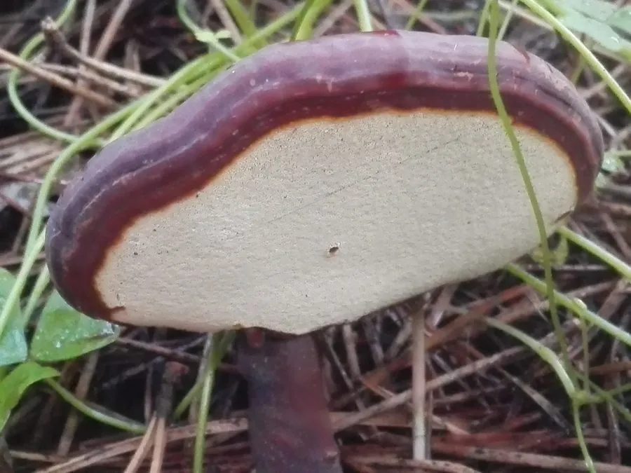

真菌 · 真菌界
灵芝 Ganoderma lucidum

灵芝的菌盖呈漆亮的红褐色，质地木质坚硬，是中国传统的名贵药用真菌，含灵芝多糖与三萜类等活性成分。
- 分类
- 门担子菌门纲伞菌纲目多孔菌目科灵芝科属灵芝属
- 栖息环境
- 阔叶树枯木、树桩与人工段木，喜温暖湿润、散射光
- 地理分布
- 中国、日本、东南亚等地，现中国多地人工栽培
- 保护级别
- 暂无评估（药用真菌）；野生资源因采挖下降
物种志
灵芝是担子菌门多孔菌目的木腐真菌，子实体木质化，由菌盖和菌柄组成。菌盖呈肾形、半圆形或扇形，直径 5–20 cm，表面红褐色至紫褐色，有漆样光泽和同心环纹；菌肉淡褐色，菌管层位于菌盖腹面，孔口细小；菌柄侧生或偏生，紫褐色，有光泽。孢子为卵形，双层壁，孢子印褐色。灵芝成长后质地坚硬如木，可保存多年。
灵芝野生于栎、枫等阔叶树的枯木或树桩上，分布于中国、日本、东南亚等地，多生于温暖湿润的林下。它在中国有数千年的药用历史，《神农本草经》将其列为上品，被视为滋补强壮的“仙草”。现代栽培多用段木或木屑菌袋，需较长时间出芝。灵芝含灵芝多糖、三萜类、甾醇等成分，被用于免疫调节和辅助保健，但野生灵芝常被过度采挖，市场上应注意辨别真伪与品质。
形态与习性
- 菌盖肾形或半圆形，直径 5–20 cm
- 表面红褐色，有漆样光泽与同心环纹
- 质地木质坚硬，可保存多年
- 菌管位于菌盖腹面，孔口细小
- 孢子卵形，具双层壁
- 栽培段木或木屑菌袋栽培
- 主要成分灵芝多糖与三萜类化合物
趣味知识
- 灵芝菌盖表面的漆样光泽来自一层特殊的外皮，像涂了清漆。
- 灵芝孢子的壁是双层的，破壁后才能更好地释放其中的成分。
- 《神农本草经》把灵芝列为上品，但野生灵芝并不能包治百病。